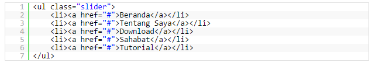
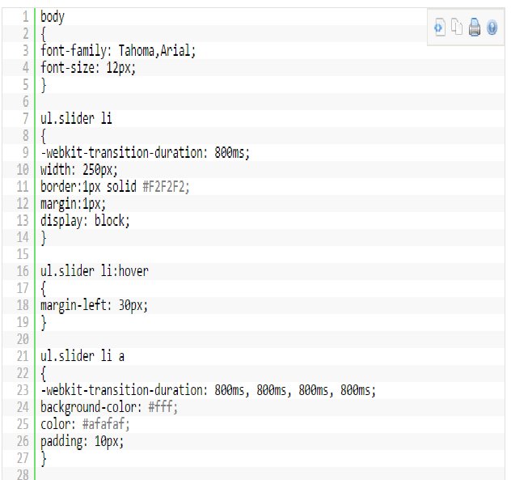

Membuat Slider Menu Sederhana Dengan CSS3 Tanpa Javascript
Saya akan membagikan sedikit tutorial sederhana tentang CSS3 yaitu Membuat Slider Menu Sederhana Dengan CSS3 Tanpa Javascript. Efek-efek yang dimiliki CSS3 memang maknyoos, saya pun ketagihan untuk mencicipinya. Dan sama seperti menu accordion dengan CSS3 yang kemarin, slider menu dengan CSS3 ini tidak berjalan pada firefox. Dan sampai saat ini, saya belum tau juga apa penyebabnya. OK deh, langsung aja ke cara pembuatannya.
-
Buka editor kesayangan rekan-rekan, Kita akan menyusun kode-kode htmlnya terlebih dahulu, seperti di bawah ini :

-
Selanjutnya kita akan mulai untuk membuat kode-kode CSS’nya. Dengan -webkit-transition-duration yang merupakan komponen dari CSS3, kita akan membuat sebuah efek transisi yang akan menghasilkan sebuah efek sliding.

-
Karena saya memisahkan file css dengan file html nya, jangan lupa untuk memanggil file css di atas. Atau bagi yang tidak ingin repot, bisa juga menempatkan kode css di atas menjadi satu dengan file html nya.

Silahkan dibuka via web browser, dan jangan terkejut jika efeknya tidak berjalan pada browser Firefox. Silahkan dicoba dengan Chrome, Opera, Midori, IE8. Semoga bisa bermanfaat untuk rekan-rekan yang kebetulan lagi ngoprek CSS